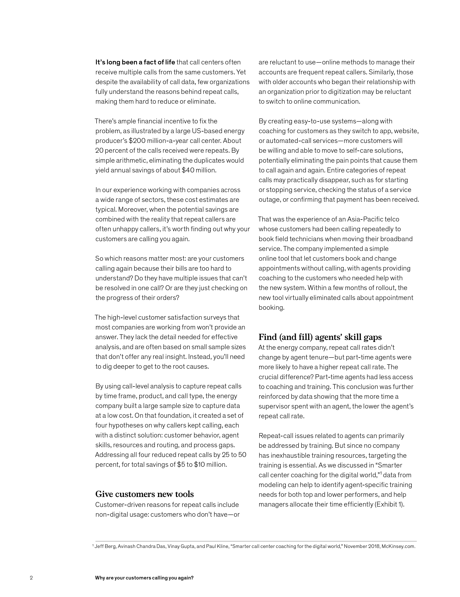
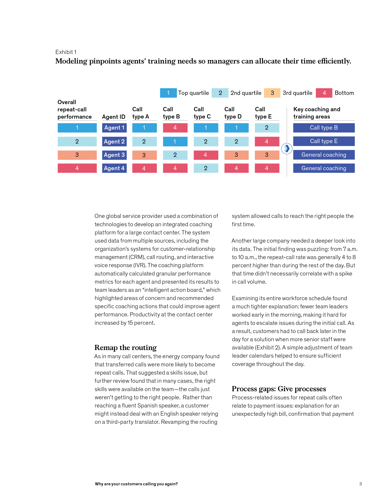
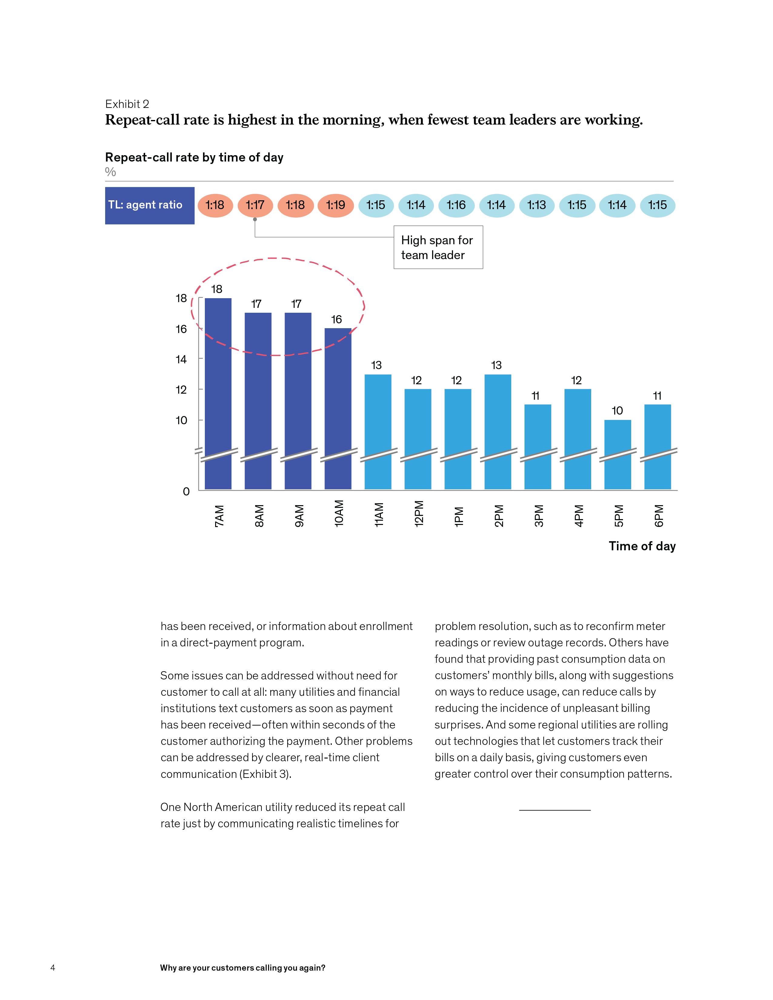
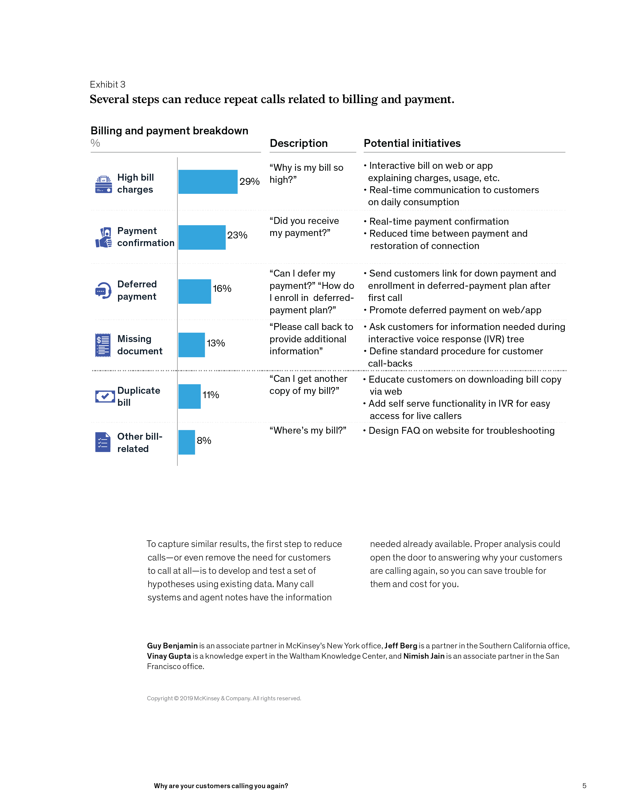

As some of you know, we have a monthly feature,
the Gold Standard, highlighting strong pieces of thought
leadership from professional services firms. The idea is
to show what “good” looks like in the thought leadership market. With that in mind, we also offer occasional dissections” of an article or report that show specifically when a piece hits the mark and when it misses.
In this annotation, I review a McKinsey & Company
article, “Why are your customers calling you again?” I
have a weakness for pieces about call centers, maybe because I’ve spent months of my life on the phone with call-center representatives or at least trying to get through to them. This is a bread-and-butter kind of piece—nothing fancy and relatively short. One of my former colleagues referred to these types of articles as “cash-register ringers”—pieces that prompt readers to pick up the phone and call the authors. This article has weaknesses, as I will show, but it still moves the ball ahead and proves that professional services firms need not publish 50-page reports to attract client attention.
Back to top
Click on the icons to read Allan’s annotations


Section 1
Fixing call centers is a perennial topic for consultancies. That's not a problem if there's a new way to look at the issues. Here, the authors address call-level data.


Good use of an example in the introduction. An astute reader will understand that the authors have served clients on the issue.
One question the article fails to address is why companies haven't been using these data. Is it that data analytics approaches have become more sophisticated? Are there new sources of data that weren't available before?
There's an apparent conflict between the savings suggested in the second paragraph and
the savings noted here (following
the logic of
the second paragraph, the upper limits
of savings noted
in the last paragraph should have been
$20 million). This discrepancy, no doubt, could have been explained.
The authors combine the situation and complication in the introduction, allowing them to dive straight into the prescriptions
in the body. You can do that
when the issue is not especially complicated. Time-pressed readers will appreciate this approach, when doable.
The article is filled with real-world examples.
Sometimes author teams forget to note the results of an intervention—or avoid doing so. These examples all show what happened.
The article lacks basic background on the size of the call-center business or its history. That's an oversight.

Section 2

Section 3

Section 4
The down-in-the weeds exhibits reinforce that the author team has actually done this work.
A straightforward conclusion to a straightforward article. Sometimes authors get carried away with their knowledge. Short, uncomplicated, and direct pieces can also get the phones ringing.
“